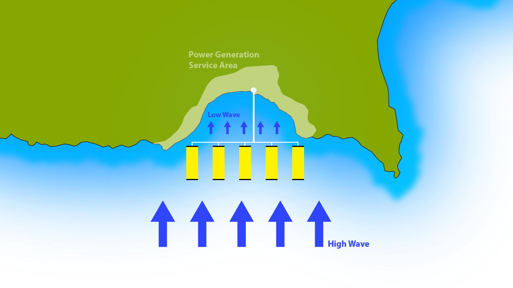

Application
Due to the modular and scalable design of the Waveline Magnet in combination with its unique interaction with the sea wave, allows it to be deployed to almost any wave profile environment, working under the most extreme weather conditions, providing a combination of solutions:
Desalination
There are constant needs for clean water and desalinated water as a direct substitute to natural spring sources. The Waveline Magnet is capable of producing the necessary pressures and power to desalinate water on-board, providing water solutions to even the most remote and harsh areas.
Power Generation
The mechanical power produced allows for both Electricity and Hydrogen production. The design and versatility of the device means it can be deployed to provide temporary or permanent power solutions. In fact the technology is so diverse and versatile it can even be adapted to operate as a floating hydrogen production plant.
Coastal Erosion Prevention
Erosion is the wearing away of the land by the sea. This often involves destructive waves wearing away the coast that costs governments billions but also having adverse effects on the local economy. The WM’s unique interaction with the wave dampens its force in a controlled manner, reducing the force of the wave and its adverse effects on the coast line, while simultaneously producing mechanical power that can be used to enhance the local economy’s infrastructure and heighten economic activity in the area.
